Best. farm. ever!
Create the perfect farming experience with friends and neighbors from around the world. With millions of players and tons of fun content, it's the biggest, bestest farmin' game around!
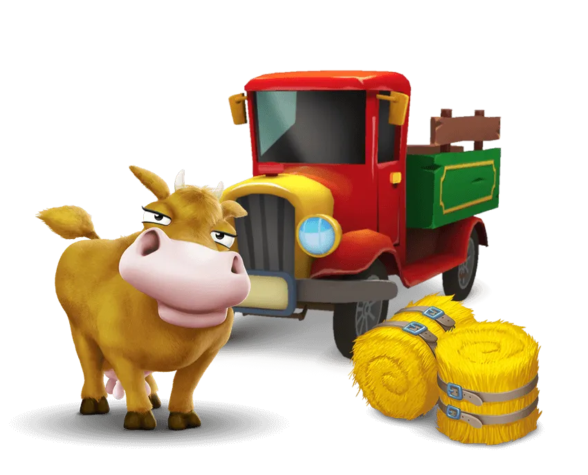A New Life Awaits!
Greetings from your Uncle!
How'd you like to be farmer? I've decided to retire. The farm is yours if you want it!
Your Uncle,
Grow and Customize Your Farm!
Hang out with all the animals - they're unconventionally adorable! Delight farm visitors and friends with fresh goods and even fresher decorations.
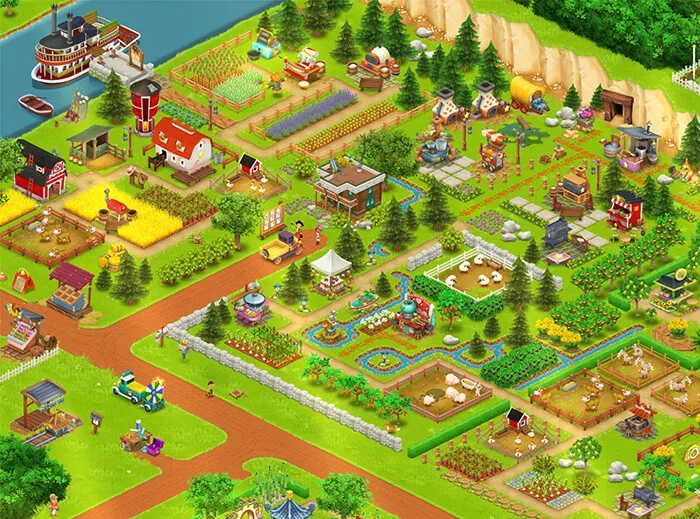 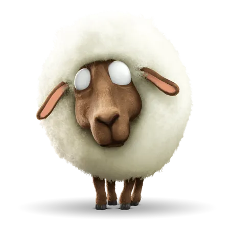Connect With Your Friends!
Play with your pals by trading crops and goods. Form neighborhoods to keep in touch, compete in the Derby, contribute to Global Community Events, and more!
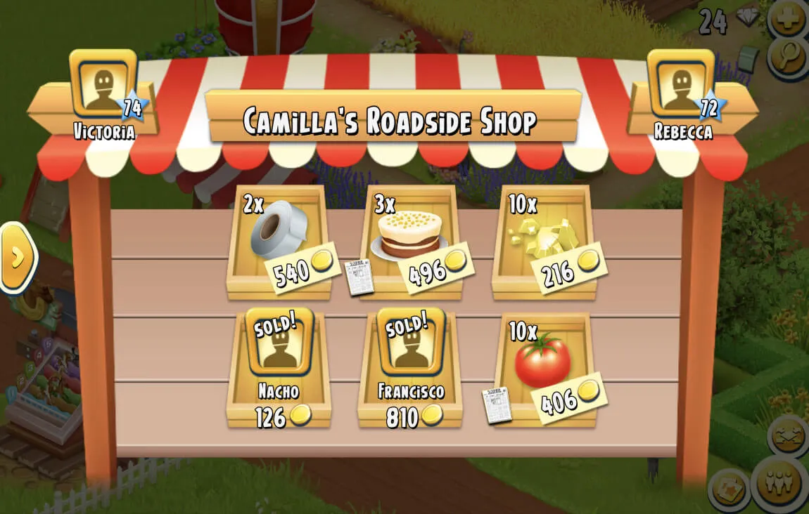New Areas to Explore!
Explore the Hay Day world by building a Town, going Fishing, and sending your delivery truck to the Valley!
Valley
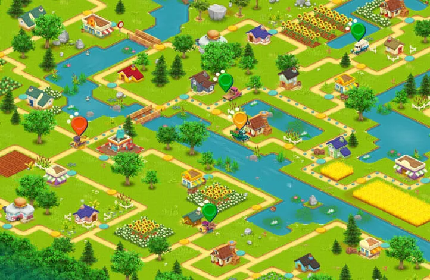Fishing
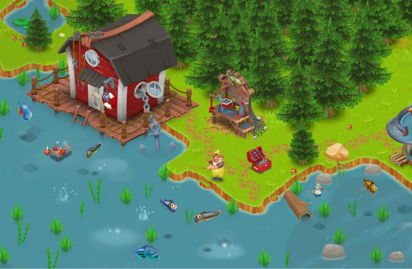Town
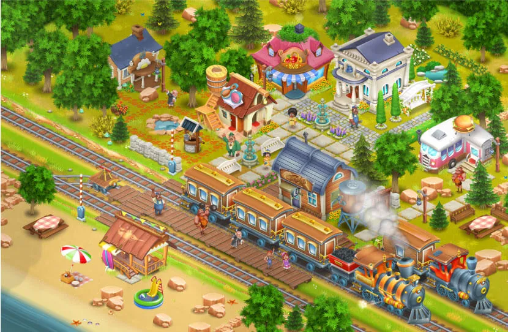Download Recipes!
We've created special recipes for the Bee-licious foods of Hay Day. Give it a try!
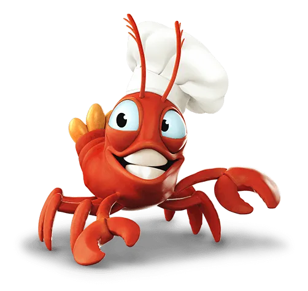
Celebrating Hay Day's 10th Birthday with a Cookbook filled with home-cooked delights straight from the game.
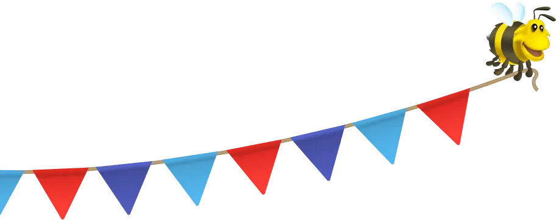 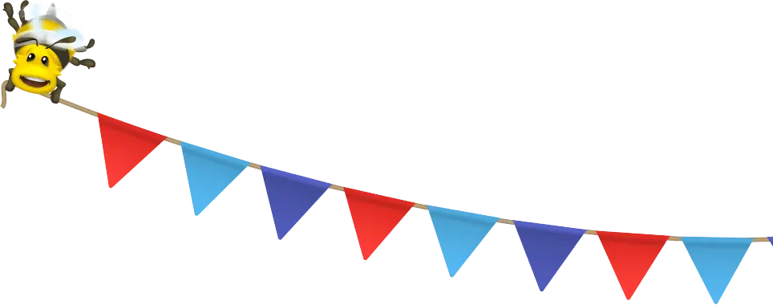 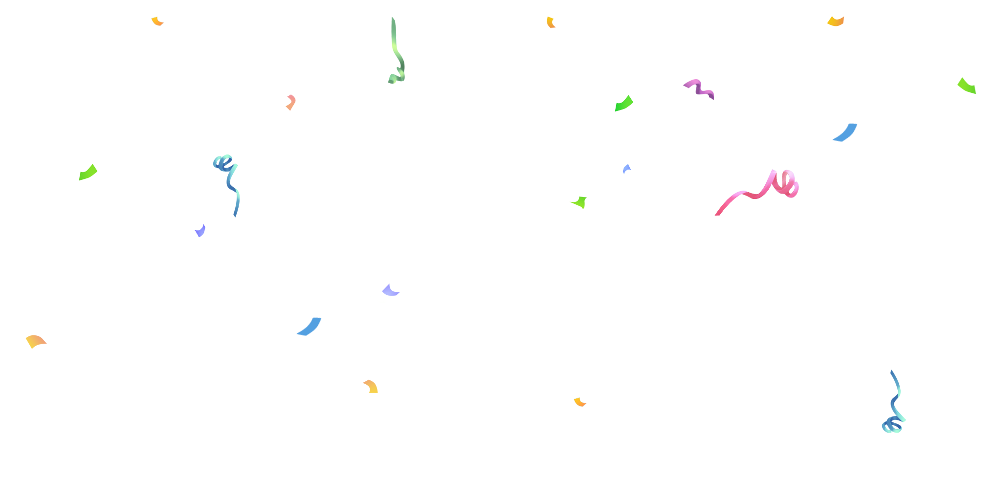Help Your Neighbor.
Help the Planet.
Follow us on social media
Stay up-to-date with the latest in Hay Day
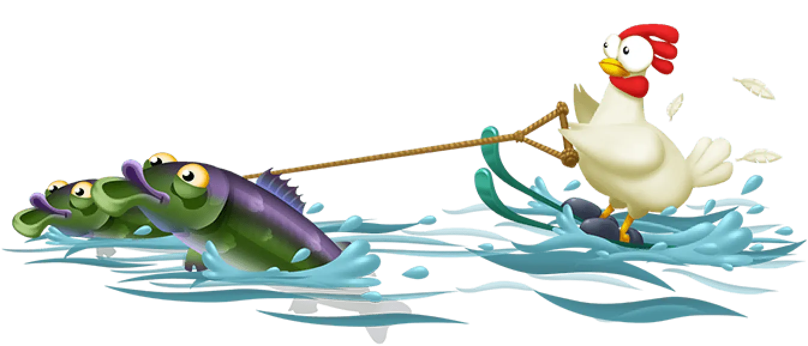-
Discover the BEST Autumn Festivities in Hay Day!
-
Dive into fun with Summer Games!
-
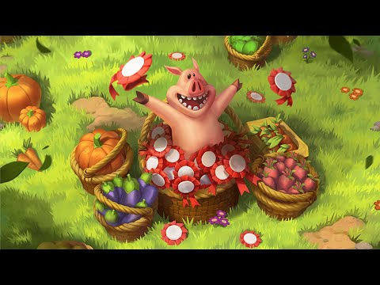
Welcome to Hay Day's July County Fair